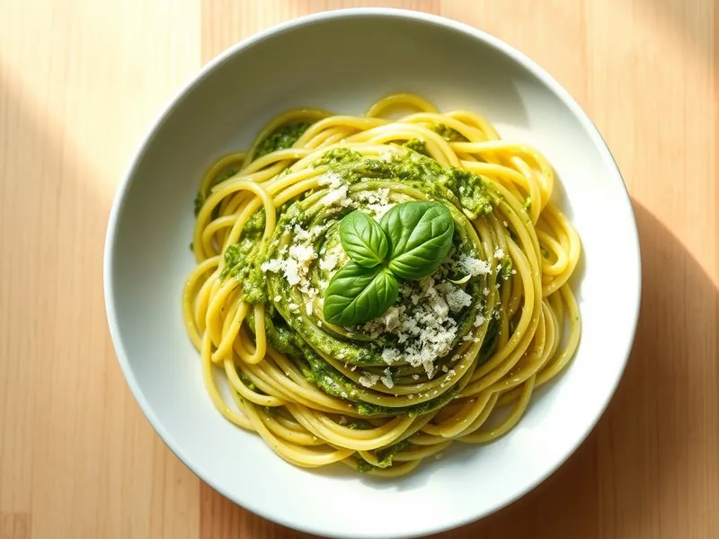

Паста с соусом песто
Паста с домашним песто из базилика, пармезана, чеснока и грецких орехов
15 мин2 порц.776 ккал на порциюБ 20 · Ж 45 · У 72Итальянская кухня
Открыть в приложении: порции, таймеры, список покупок
Продукты на 2 порц.
- Макароны200 г
- Базилик1 пучок
- Пармезан40 г
- Оливковое масло4 ст. л.
- Грецкие орехи25 г
- Чеснок1 зуб.
- Соль2 ч. л.
- Вода2000 мл
Как готовить
- Вскипятите воду на сильном огне, посолите и сварите пасту по инструкции на упаковке, обычно 8-10 минут.
- Пока варится паста, оборвите листья базилика, пармезан натрите.
- Сложите в блендер базилик, орехи, чеснок, пармезан, щепотку соли и масло. Пробейте 30-40 секунд до однородной зелёной пасты.
- Отлейте 50 мл воды, пасту откиньте и верните в кастрюлю.
- Добавьте песто и перемешайте вне огня, подливая воду по ложке, пока соус не покроет пасту ровным слоем.
Совет. Песто не греют на сковороде: от жара базилик темнеет и теряет аромат. Кедровые орехи вкуснее, но грецкие дают почти тот же результат.